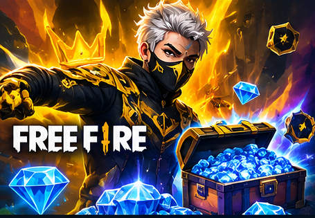
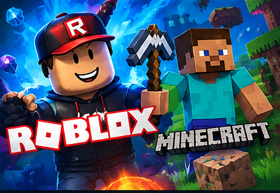

Cómo canjear códigos oficiales de Free Fire sin caer en estafas
Los códigos promocionales cambian con el tiempo y pueden tener restricciones por región. La forma segura de comprobarlos es u…
Leer →

Guías propias, novedades oficiales, seguridad, creadores y recursos para explorar tus juegos favoritos.
Cada juego tiene una zona propia con varias guías.
Free Fire y Call of Duty: Mobile permiten recarga por ID en sus centros autorizados. Para Roblox, Minecraft, Brawl Stars, Fortnite y GTA Online te llevamos a sus tiendas oficiales.
Contenido propio pensado para resolver búsquedas reales.
Los códigos promocionales cambian con el tiempo y pueden tener restricciones por región. La forma segura de comprobarlos es u…
Leer →Una web externa no puede crear Robux legítimos solo porque escribas tu nombre de usuario. Las promesas de Robux ilimitados su…
Leer →Madera, herramientas de piedra y comida suficiente te dan una base estable para explorar sin correr riesgos innecesarios.…
Leer →Muros, arbustos y espacios abiertos cambian qué alcances y habilidades funcionan bien.…
Leer →En Zero Build no puedes crear una pared al instante, así que la posición importa mucho más.…
Leer →Un ajuste que puedas repetir bajo presión suele ser mejor que uno extremadamente rápido que solo funciona a veces.…
Leer →Selección editorial con enlace directo a la fuente original.
Fortnite publicó su actualización destacada de octubre en su página oficial de noticias.
Fuente oficial ↗Rockstar anunció actividades temáticas de Halloween para GTA Online durante octubre.
Fuente oficial ↗Supercell publicó la colaboración en el archivo oficial de noticias de Brawl Stars.
Fuente oficial ↗Garena publicó el regreso del contenido de colaboración con Naruto Shippuden.
Fuente oficial ↗Roblox presentó experiencias y actualizaciones previstas para otoño, incluidas novedades de octubre.
Fuente oficial ↗Minecraft destacó Wilderness Bound y otras novedades en sus páginas oficiales.
Fuente oficial ↗Tony Games organiza enlaces externos; no representa a estos creadores.
Contenido externo recomendado para descubrir más sobre Free Fire.
Ver creador ↗Contenido externo recomendado para descubrir más sobre Roblox.
Ver creador ↗Contenido externo recomendado para descubrir más sobre Minecraft.
Ver creador ↗Contenido externo recomendado para descubrir más sobre Brawl Stars.
Ver creador ↗